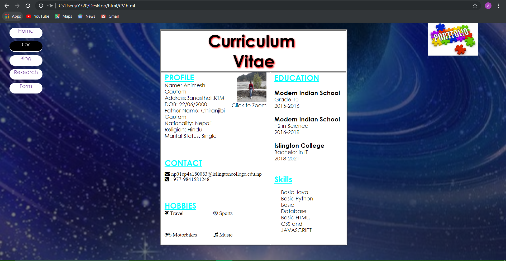
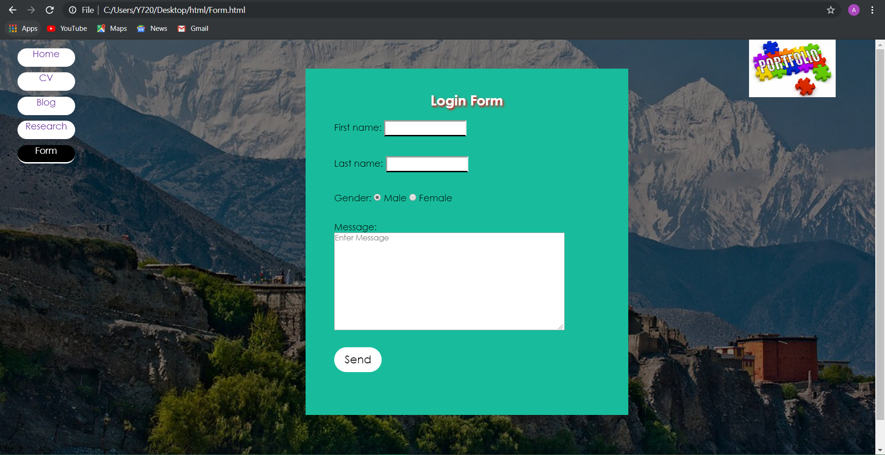

Research

|
In the above diagram the right one is the website of mine and the left on is the website from which I got idea for navigation bar. By looking through this website I got the idea of vertical navigation bar and it was really immpressive. By undergoing some changes like border and desgin, I made my navigation bar as shown above. |
|---|---|

|
As I was going through different websites I found a image slider which was very attractive. There were two buttons to slide images. So I made a image slider in home page but it was slightly different as there are no buttons and it was a auto slider which change images in a given interval of time. This image slider was made using javascript which was also the requirement of our coursework. |

|
 |
I found websites with different formate of cv. But I liked this format personally. So I made my cv with slight change in the format and the images were in different positions too. |

|
Choosing the format was not so tough as format of all the blogs were almost the same. My blog section also conatins the simple formate with heading, paragraph tag and also shows time which was done using javascript. |

|
 |
The format is different than that of which I investigated. Though being different I got the main idea to built the form section by investigating through that website. Form section shows pop up message after submitting the form which was agin done using javascript. |